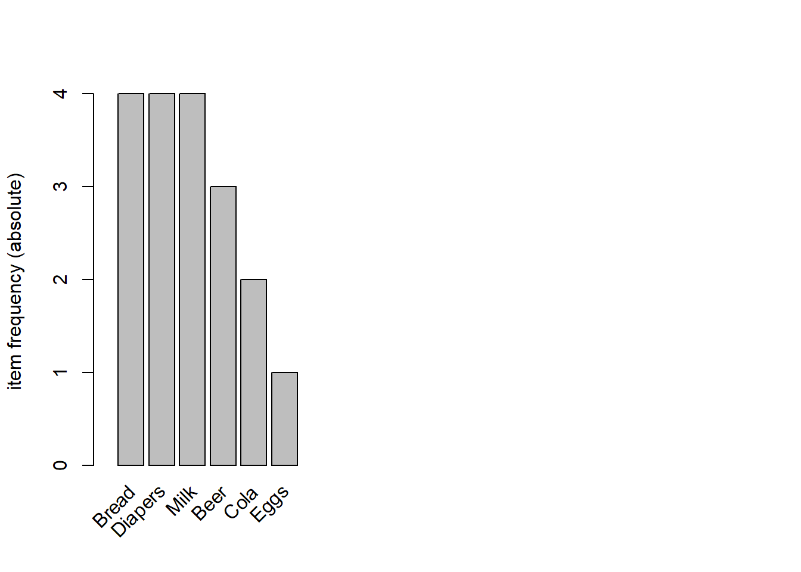
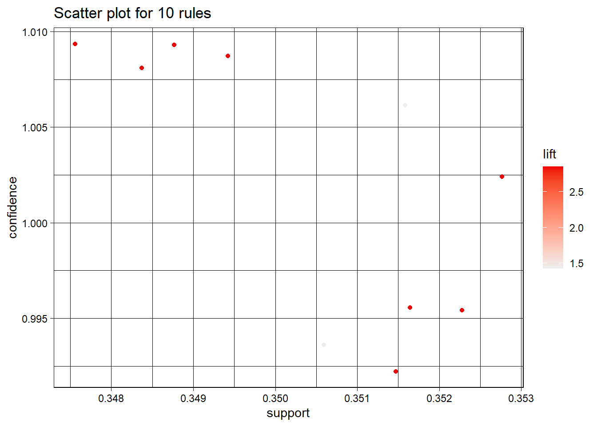

## install.packages("arules")
## For arulesViz to work on R version 3.5.x, you will
## need to first go through an installation of RTools.
## See HOW TO above.
## Next - once the RTools exe has been downloaded and installed
## per the instructions, then, do these install.packages here in RStudio:
#install.packages("TSP")
#install.packages("data.table")
## NOTE: If you are asked if you want to INSTALL FROM SOURCE - click YES!
#install.packages("arulesViz", dependencies = TRUE)
## IMPORTANT ## arules ONLY grabs rules with ONE item on the right
## install.packages("sp")
## NOTE R V3.5.0 does not use the older
## datasets packages
## install.packages("datasets.load") - not used here
## install.packages("ggplot2") - not used here
## install.packages("dplyr", dependencies = TRUE)
## install.packages("purrr", dependencies = TRUE)
## install.packages("devtools", dependencies = TRUE)
## install.packages("tidyr")Association Rule Mining Examples
This example will use the Apriori Alg.
To perform Association Rule Mining, transaction data is needed. MANY libraries will also be required…
To perform association rule mining, you must have transaction data AND you must create a datafile that presents that data in whatever way your library expects. I will use basket here.
TO GET this code to work and to get arulesViz to work - you wil have to carefully and patiently do the following:
DO these installs once
library(viridis)Loading required package: viridisLitelibrary(arules)Loading required package: Matrix
Attaching package: 'arules'The following objects are masked from 'package:base':
abbreviate, writelibrary(TSP)
library(data.table)
#library(ggplot2)
#library(Matrix)
library(tcltk)
library(dplyr)
Attaching package: 'dplyr'The following objects are masked from 'package:data.table':
between, first, lastThe following objects are masked from 'package:arules':
intersect, recode, setdiff, setequal, unionThe following objects are masked from 'package:stats':
filter, lagThe following objects are masked from 'package:base':
intersect, setdiff, setequal, unionlibrary(devtools)Loading required package: usethislibrary(purrr)
Attaching package: 'purrr'The following object is masked from 'package:data.table':
transposelibrary(tidyr)
Attaching package: 'tidyr'The following objects are masked from 'package:Matrix':
expand, pack, unpack## DO THIS ONCE
## FIRST - you MUST register and log into github
## install_github("mhahsler/arulesViz")
## RE: https://github.com/mhahsler/arulesViz## IF YOUR CODE BREAKS - TRY THIS
## Error in length(obj) : Method length not implemented for class rules
## DO THIS:
## (1)
detach("package:arulesViz", unload=TRUE)
## (2)
detach("package:arules", unload=TRUE)
## (3)
library(arules)
## (4)
library(arulesViz)## To see if you have tcltk run this on the console...
# capabilities()["tcltk"]
library(arulesViz)## YOUR working dir goes here...
setwd("C:/Users/...")Example 1: Kumar’s Beer Example
Dataset: KumarGroceriesAS_Transactions
Dataset: HealthyBasket
FoodsKumar <- read.transactions("KumarGroceriesAS_Transactions.csv",
rm.duplicates = FALSE,
format = "basket", ##if you use "single" also use cols=c(1,2)
sep=",", ## csv file
cols=1) ## The dataset HAS row numbers
inspect(FoodsKumar) items transactionID
[1] {Bread, Milk} 1
[2] {Beer, Bread, Diapers, Eggs} 2
[3] {Beer, Cola, Diapers, Milk} 3
[4] {Beer, Bread, Diapers, Milk} 4
[5] {Bread, Cola, Diapers, Milk} 5 ##### Use apriori to get the RULES
FrulesK = arules::apriori(FoodsKumar, parameter = list(support=.35,
confidence=.5, minlen=2))Apriori
Parameter specification:
confidence minval smax arem aval originalSupport maxtime support minlen
0.5 0.1 1 none FALSE TRUE 5 0.35 2
maxlen target ext
10 rules TRUE
Algorithmic control:
filter tree heap memopt load sort verbose
0.1 TRUE TRUE FALSE TRUE 2 TRUE
Absolute minimum support count: 1
set item appearances ...[0 item(s)] done [0.00s].
set transactions ...[6 item(s), 5 transaction(s)] done [0.00s].
sorting and recoding items ... [5 item(s)] done [0.00s].
creating transaction tree ... done [0.00s].
checking subsets of size 1 2 3 done [0.00s].
writing ... [28 rule(s)] done [0.00s].
creating S4 object ... done [0.00s].inspect(FrulesK) lhs rhs support confidence coverage lift count
[1] {Cola} => {Milk} 0.4 1.0000000 0.4 1.2500000 2
[2] {Milk} => {Cola} 0.4 0.5000000 0.8 1.2500000 2
[3] {Cola} => {Diapers} 0.4 1.0000000 0.4 1.2500000 2
[4] {Diapers} => {Cola} 0.4 0.5000000 0.8 1.2500000 2
[5] {Beer} => {Milk} 0.4 0.6666667 0.6 0.8333333 2
[6] {Milk} => {Beer} 0.4 0.5000000 0.8 0.8333333 2
[7] {Beer} => {Bread} 0.4 0.6666667 0.6 0.8333333 2
[8] {Bread} => {Beer} 0.4 0.5000000 0.8 0.8333333 2
[9] {Beer} => {Diapers} 0.6 1.0000000 0.6 1.2500000 3
[10] {Diapers} => {Beer} 0.6 0.7500000 0.8 1.2500000 3
[11] {Milk} => {Bread} 0.6 0.7500000 0.8 0.9375000 3
[12] {Bread} => {Milk} 0.6 0.7500000 0.8 0.9375000 3
[13] {Milk} => {Diapers} 0.6 0.7500000 0.8 0.9375000 3
[14] {Diapers} => {Milk} 0.6 0.7500000 0.8 0.9375000 3
[15] {Bread} => {Diapers} 0.6 0.7500000 0.8 0.9375000 3
[16] {Diapers} => {Bread} 0.6 0.7500000 0.8 0.9375000 3
[17] {Cola, Milk} => {Diapers} 0.4 1.0000000 0.4 1.2500000 2
[18] {Cola, Diapers} => {Milk} 0.4 1.0000000 0.4 1.2500000 2
[19] {Diapers, Milk} => {Cola} 0.4 0.6666667 0.6 1.6666667 2
[20] {Beer, Milk} => {Diapers} 0.4 1.0000000 0.4 1.2500000 2
[21] {Beer, Diapers} => {Milk} 0.4 0.6666667 0.6 0.8333333 2
[22] {Diapers, Milk} => {Beer} 0.4 0.6666667 0.6 1.1111111 2
[23] {Beer, Bread} => {Diapers} 0.4 1.0000000 0.4 1.2500000 2
[24] {Beer, Diapers} => {Bread} 0.4 0.6666667 0.6 0.8333333 2
[25] {Bread, Diapers} => {Beer} 0.4 0.6666667 0.6 1.1111111 2
[26] {Bread, Milk} => {Diapers} 0.4 0.6666667 0.6 0.8333333 2
[27] {Diapers, Milk} => {Bread} 0.4 0.6666667 0.6 0.8333333 2
[28] {Bread, Diapers} => {Milk} 0.4 0.6666667 0.6 0.8333333 2 ## Plot of which items are most frequent
itemFrequencyPlot(FoodsKumar, topN=20, type="absolute")
## Sort rules by a measure such as conf, sup, or lift
SortedRulesK <- sort(FrulesK, by="confidence", decreasing=TRUE)
inspect(SortedRulesK[1:10]) lhs rhs support confidence coverage lift count
[1] {Cola} => {Milk} 0.4 1.00 0.4 1.2500 2
[2] {Cola} => {Diapers} 0.4 1.00 0.4 1.2500 2
[3] {Beer} => {Diapers} 0.6 1.00 0.6 1.2500 3
[4] {Cola, Milk} => {Diapers} 0.4 1.00 0.4 1.2500 2
[5] {Cola, Diapers} => {Milk} 0.4 1.00 0.4 1.2500 2
[6] {Beer, Milk} => {Diapers} 0.4 1.00 0.4 1.2500 2
[7] {Beer, Bread} => {Diapers} 0.4 1.00 0.4 1.2500 2
[8] {Diapers} => {Beer} 0.6 0.75 0.8 1.2500 3
[9] {Milk} => {Bread} 0.6 0.75 0.8 0.9375 3
[10] {Bread} => {Milk} 0.6 0.75 0.8 0.9375 3 (summary(SortedRulesK))set of 28 rules
rule length distribution (lhs + rhs):sizes
2 3
16 12
Min. 1st Qu. Median Mean 3rd Qu. Max.
2.000 2.000 2.000 2.429 3.000 3.000
summary of quality measures:
support confidence coverage lift
Min. :0.4000 Min. :0.5000 Min. :0.4000 Min. :0.8333
1st Qu.:0.4000 1st Qu.:0.6667 1st Qu.:0.6000 1st Qu.:0.8333
Median :0.4000 Median :0.7083 Median :0.6000 Median :0.9375
Mean :0.4571 Mean :0.7470 Mean :0.6357 Mean :1.0541
3rd Qu.:0.6000 3rd Qu.:0.8125 3rd Qu.:0.8000 3rd Qu.:1.2500
Max. :0.6000 Max. :1.0000 Max. :0.8000 Max. :1.6667
count
Min. :2.000
1st Qu.:2.000
Median :2.000
Mean :2.286
3rd Qu.:3.000
Max. :3.000
mining info:
data ntransactions support confidence
FoodsKumar 5 0.35 0.5
call
arules::apriori(data = FoodsKumar, parameter = list(support = 0.35, confidence = 0.5, minlen = 2))## Selecting or targeting specific rules RHS
BeerRules <- apriori(data=FoodsKumar,parameter = list(supp=.001, conf=.01, minlen=2),
appearance = list(default="lhs", rhs="Beer"),
control=list(verbose=FALSE))
BeerRules <- sort(BeerRules, decreasing=TRUE, by="confidence")
inspect(BeerRules[1:4]) lhs rhs support confidence coverage lift count
[1] {Eggs} => {Beer} 0.2 1 0.2 1.666667 1
[2] {Bread, Eggs} => {Beer} 0.2 1 0.2 1.666667 1
[3] {Diapers, Eggs} => {Beer} 0.2 1 0.2 1.666667 1
[4] {Bread, Diapers, Eggs} => {Beer} 0.2 1 0.2 1.666667 1 ## Selecting rules with LHS specified
BreadRules <- apriori(data=FoodsKumar,parameter = list(supp=.001, conf=.01, minlen=2),
appearance = list(default="rhs", lhs="Bread"),
control=list(verbose=FALSE))
BreadRules <- sort(BreadRules, decreasing=TRUE, by="support")
inspect(BreadRules[1:4]) lhs rhs support confidence coverage lift count
[1] {Bread} => {Milk} 0.6 0.75 0.8 0.9375000 3
[2] {Bread} => {Diapers} 0.6 0.75 0.8 0.9375000 3
[3] {Bread} => {Beer} 0.4 0.50 0.8 0.8333333 2
[4] {Bread} => {Eggs} 0.2 0.25 0.8 1.2500000 1 Visualize
tcltk
subrulesK <- head(sort(SortedRulesK, by="lift"),10)
plot(subrulesK)To reduce overplotting, jitter is added! Use jitter = 0 to prevent jitter.plot(subrulesK, method="graph", engine="interactive")Example 2: Healthy Food Transaction Data
HERE IS THE DATA - but you should make your own dataset!
Foods <- read.transactions("HealthyBasketData.csv",
rm.duplicates = FALSE,
format = "basket", ##if you use "single" also use cols=c(1,2)
sep=",", ## csv file
cols=NULL) ## The dataset has no row numbers
inspect(Foods) items
[1] {chocloate, coffee, quinoa, soymilk}
[2] {kale, quinoa, soymilk, tea}
[3] {kale, quinoa}
[4] {chocloate, coffee, quinoa, soymilk}
[5] {carrot, quinoa, soymilk, tea}
[6] {kale, quinoa}
[7] {carrot, chocloate, coffee, quinoa, soymilk}
[8] {kale, quinoa, soymilk, tea}
[9] {carrot, quinoa}
[10] {chocloate, coffee, quinoa, soymilk}
[11] {kale, quinoa, soymilk, tea}
[12] {carrot, quinoa}
[13] {carrot, chocloate, coffee, quinoa, soymilk}
[14] {quinoa, soymilk, tea}
[15] {kale, quinoa}
[16] {chocloate, coffee, quinoa, soymilk}
[17] {carrot, quinoa, soymilk}
[18] {carrot, quinoa}
[19] {chocloate, coffee, quinoa, soymilk}
[20] {quinoa, soymilk} ##### Use apriori to get the RULES
Frules = arules::apriori(Foods, parameter = list(support=.35,
confidence=.5, minlen=2))Apriori
Parameter specification:
confidence minval smax arem aval originalSupport maxtime support minlen
0.5 0.1 1 none FALSE TRUE 5 0.35 2
maxlen target ext
10 rules TRUE
Algorithmic control:
filter tree heap memopt load sort verbose
0.1 TRUE TRUE FALSE TRUE 2 TRUE
Absolute minimum support count: 7
set item appearances ...[0 item(s)] done [0.00s].
set transactions ...[7 item(s), 20 transaction(s)] done [0.00s].
sorting and recoding items ... [5 item(s)] done [0.00s].
creating transaction tree ... done [0.00s].
checking subsets of size 1 2 3 4 done [0.00s].
writing ... [27 rule(s)] done [0.00s].
creating S4 object ... done [0.00s].inspect(Frules) lhs rhs support confidence coverage
[1] {carrot} => {quinoa} 0.35 1.0 0.35
[2] {coffee} => {chocloate} 0.35 1.0 0.35
[3] {chocloate} => {coffee} 0.35 1.0 0.35
[4] {coffee} => {soymilk} 0.35 1.0 0.35
[5] {soymilk} => {coffee} 0.35 0.5 0.70
[6] {coffee} => {quinoa} 0.35 1.0 0.35
[7] {chocloate} => {soymilk} 0.35 1.0 0.35
[8] {soymilk} => {chocloate} 0.35 0.5 0.70
[9] {chocloate} => {quinoa} 0.35 1.0 0.35
[10] {soymilk} => {quinoa} 0.70 1.0 0.70
[11] {quinoa} => {soymilk} 0.70 0.7 1.00
[12] {chocloate, coffee} => {soymilk} 0.35 1.0 0.35
[13] {coffee, soymilk} => {chocloate} 0.35 1.0 0.35
[14] {chocloate, soymilk} => {coffee} 0.35 1.0 0.35
[15] {chocloate, coffee} => {quinoa} 0.35 1.0 0.35
[16] {coffee, quinoa} => {chocloate} 0.35 1.0 0.35
[17] {chocloate, quinoa} => {coffee} 0.35 1.0 0.35
[18] {coffee, soymilk} => {quinoa} 0.35 1.0 0.35
[19] {coffee, quinoa} => {soymilk} 0.35 1.0 0.35
[20] {quinoa, soymilk} => {coffee} 0.35 0.5 0.70
[21] {chocloate, soymilk} => {quinoa} 0.35 1.0 0.35
[22] {chocloate, quinoa} => {soymilk} 0.35 1.0 0.35
[23] {quinoa, soymilk} => {chocloate} 0.35 0.5 0.70
[24] {chocloate, coffee, soymilk} => {quinoa} 0.35 1.0 0.35
[25] {chocloate, coffee, quinoa} => {soymilk} 0.35 1.0 0.35
[26] {coffee, quinoa, soymilk} => {chocloate} 0.35 1.0 0.35
[27] {chocloate, quinoa, soymilk} => {coffee} 0.35 1.0 0.35
lift count
[1] 1.000000 7
[2] 2.857143 7
[3] 2.857143 7
[4] 1.428571 7
[5] 1.428571 7
[6] 1.000000 7
[7] 1.428571 7
[8] 1.428571 7
[9] 1.000000 7
[10] 1.000000 14
[11] 1.000000 14
[12] 1.428571 7
[13] 2.857143 7
[14] 2.857143 7
[15] 1.000000 7
[16] 2.857143 7
[17] 2.857143 7
[18] 1.000000 7
[19] 1.428571 7
[20] 1.428571 7
[21] 1.000000 7
[22] 1.428571 7
[23] 1.428571 7
[24] 1.000000 7
[25] 1.428571 7
[26] 2.857143 7
[27] 2.857143 7 ## Plot of which items are most frequent
itemFrequencyPlot(Foods, topN=20, type="absolute")
## Sort rules by a measure such as conf, sup, or lift
SortedRules <- sort(Frules, by="confidence", decreasing=TRUE)
inspect(SortedRules[1:10]) lhs rhs support confidence coverage lift
[1] {carrot} => {quinoa} 0.35 1 0.35 1.000000
[2] {coffee} => {chocloate} 0.35 1 0.35 2.857143
[3] {chocloate} => {coffee} 0.35 1 0.35 2.857143
[4] {coffee} => {soymilk} 0.35 1 0.35 1.428571
[5] {coffee} => {quinoa} 0.35 1 0.35 1.000000
[6] {chocloate} => {soymilk} 0.35 1 0.35 1.428571
[7] {chocloate} => {quinoa} 0.35 1 0.35 1.000000
[8] {soymilk} => {quinoa} 0.70 1 0.70 1.000000
[9] {chocloate, coffee} => {soymilk} 0.35 1 0.35 1.428571
[10] {coffee, soymilk} => {chocloate} 0.35 1 0.35 2.857143
count
[1] 7
[2] 7
[3] 7
[4] 7
[5] 7
[6] 7
[7] 7
[8] 14
[9] 7
[10] 7 (summary(SortedRules))set of 27 rules
rule length distribution (lhs + rhs):sizes
2 3 4
11 12 4
Min. 1st Qu. Median Mean 3rd Qu. Max.
2.000 2.000 3.000 2.741 3.000 4.000
summary of quality measures:
support confidence coverage lift
Min. :0.3500 Min. :0.5000 Min. :0.3500 Min. :1.000
1st Qu.:0.3500 1st Qu.:1.0000 1st Qu.:0.3500 1st Qu.:1.000
Median :0.3500 Median :1.0000 Median :0.3500 Median :1.429
Mean :0.3759 Mean :0.9148 Mean :0.4389 Mean :1.709
3rd Qu.:0.3500 3rd Qu.:1.0000 3rd Qu.:0.3500 3rd Qu.:2.857
Max. :0.7000 Max. :1.0000 Max. :1.0000 Max. :2.857
count
Min. : 7.000
1st Qu.: 7.000
Median : 7.000
Mean : 7.519
3rd Qu.: 7.000
Max. :14.000
mining info:
data ntransactions support confidence
Foods 20 0.35 0.5
call
arules::apriori(data = Foods, parameter = list(support = 0.35, confidence = 0.5, minlen = 2))## Selecting or targeting specific rules RHS
ChocRules <- apriori(data=Foods,parameter = list(supp=.001, conf=.01, minlen=2),
appearance = list(default="lhs", rhs="chocloate"),
control=list(verbose=FALSE))
ChocRules <- sort(ChocRules, decreasing=TRUE, by="confidence")
inspect(ChocRules[1:4]) lhs rhs support confidence coverage lift count
[1] {coffee} => {chocloate} 0.35 1 0.35 2.857143 7
[2] {carrot, coffee} => {chocloate} 0.10 1 0.10 2.857143 2
[3] {coffee, soymilk} => {chocloate} 0.35 1 0.35 2.857143 7
[4] {coffee, quinoa} => {chocloate} 0.35 1 0.35 2.857143 7 ## Selecting rules with LHS specified
CarrotRules <- apriori(data=Foods,parameter = list(supp=.001, conf=.01, minlen=2),
appearance = list(default="rhs", lhs="carrot"),
control=list(verbose=FALSE))
CarrotRules <- sort(CarrotRules, decreasing=TRUE, by="support")
inspect(CarrotRules[1:4]) lhs rhs support confidence coverage lift count
[1] {carrot} => {quinoa} 0.35 1.0000000 0.35 1.0000000 7
[2] {carrot} => {soymilk} 0.20 0.5714286 0.35 0.8163265 4
[3] {carrot} => {chocloate} 0.10 0.2857143 0.35 0.8163265 2
[4] {carrot} => {coffee} 0.10 0.2857143 0.35 0.8163265 2 Visualize
tcltk
subrules <- head(sort(SortedRules, by="lift"),10)
plot(subrules)To reduce overplotting, jitter is added! Use jitter = 0 to prevent jitter.
#plot(subrules, method="graph", engine="interactive")
plot(subrules, method="graph", engine="htmlwidget")